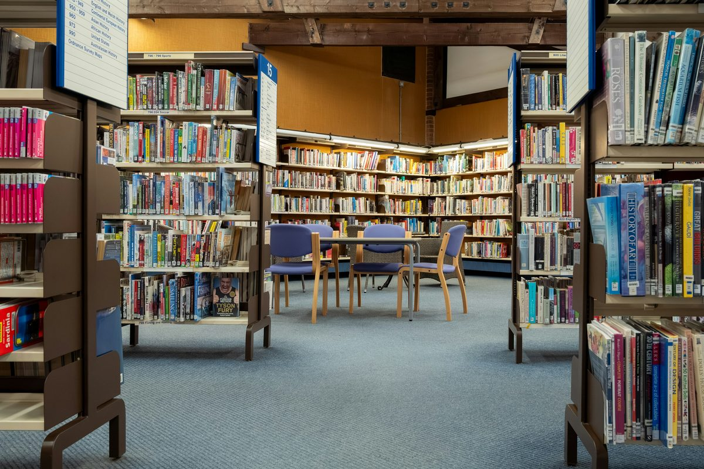

← All work
06 / 07 · Brand redesign case study
Public library, self-initiated · 2026
Kestrel Library
A self-initiated study of why a library’s logo fails on signs and screens, and how to fix it.

- Role
- Research, identity, signage (self-initiated)
- Client
- Public library, self-initiated
- Discipline
- Brand redesign case study
- Year
- 2026
The brief
The library’s 2009 logo uses four colours, three typefaces and a bevel. It disappears below 40 mm, and the building’s signs ignore it entirely.
Delivered
- Audit of 40 existing touchpoints
- Visitor and staff interviews
- Sketches and 3 directions
- New mark and signage system
- 12-page case study
Why it works
A K built from book spines still reads at 16 px as a favicon and at one metre on the entrance sign.
Teal
#0F4C5C
#0F4C5C
Paper
#F3EFE6
#F3EFE6
Amber
#E3A33A
#E3A33A
One grotesque sans in two weights, for the name and for every sign